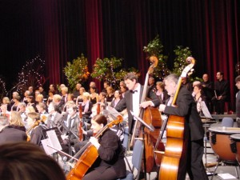
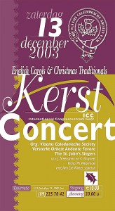

 
Het meest bekend zijn de avondvullende kerstconcerten die Andante Favore jarenlang verzorgde in samenwerking met de Vlaams-Caledonische Society. Dat waren groots opgezette concerten in de Bijloke, het Conservatorium, de Sint-Pietersabdij en het ICC. In deze laatste locaties voor een duizendkoppig publiek. Klarinetten, hobo’s, fagotten, trompetten, trombones, hoorm, pauken, klokkenspel vulden Andante Favore aan tot een dertigkoppige bezetting. Aansluitend op deze traditie van groots opgezette kerstconcerten, speelt Andante Favore de laatste jaren ook op het Kerstdorp in Sint-Martens-Latem, een initiatief van het Gemeentebestuur in samenwerking met de Lions-club en een aantal Latemse verenigingen. Andante Favore brengt dan een kerstevocatie van 1 uur met een mix van klassieke, moderne en vooral kerstmuziek uiteraard. Deze minder grootschalige optredens mikken op een honderd à tweehonderd toehoorders. Voor avondvullende concerten treedt Andante Favore nog al eens op met een koor. Zo bevoorbeeld:
Avondvullende concerten dien je wel voldoende tijd op voorhand aan te vragen. De gezamenlijke werken voor koor en orkest moeten ingestudeerd worden. Andante Favore laat zich dan bovendien in de regel versterken, zodat extra houtblazers, koperblazers en percussionisten moeten geëngageerd worden. Dit alles vraagt voorbereiding, organisatie, afspraken, opstellen van een geschikt programma en extra repetities.